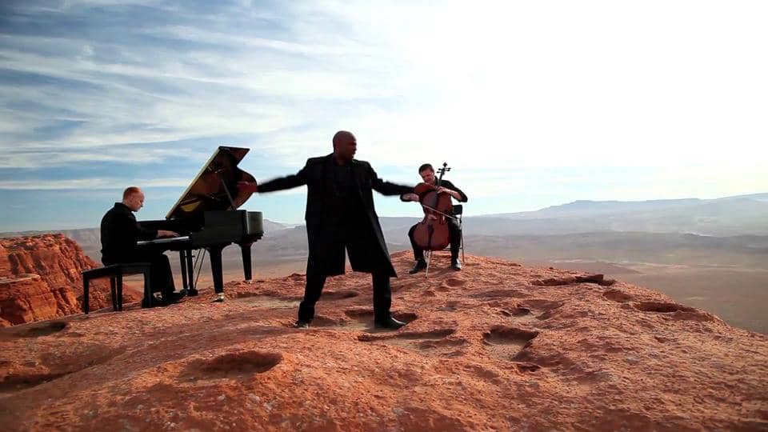

Our kids give us great inspiration for our music. When Jon's 17-year-old daughter said how much she loved this song, Jon decided to try it. He experienced a flood of inspiration. "Never has a piano part come together this fast," Jon says. Steve experienced similar inspiration while composing the cello parts. Since the lyrics suggest a bride walking towards the groom in a ceremony we thought we would include a quote from the Bridal Chorus by Wagner in the climax of the song. (It is carefully disguised). Watch it yourself!
We were writing another cover tune and it was flowing like molasses uphill in January. :-) After beating our heads against the wall for too long trying to make it work we stepped back and reset...and decided to begin again. ;-) But like so many things in life the struggle had a great payoff. While we were writing the cover-tune-fail we found inspiration from a classical piece, as we often do -- J.S. Bach's "Sheep May Safely Graze" (Cantata No. 208 -- you can hear a version of the original here: https://www.youtube.com/watch?v=ZIUCR...). As we were listening to this piece it called to memory a tune from Taylor Swift's album, "Red." Her "Begin Again" melody and Bach's Cantata seemed so well matched it was a mash-up made in Heaven. We switched to Swift's tune immediately and our arrangement finally started flowing like the Fountains of Versailles. :-) There were even moments (especially the Bridge melody of "Begin Again" and the primary melody of the Cantata) when the two seemed to play off and echo each other naturally. We wanted this arrangement to be a mix of the two styles -- a pastoral, classical feel paired with a pop-country vibe ... polished off by a bit of Valentine romance. :-) Watch it yourself!
When you combine Michael Crichton's imaginative writing, Steven Spielberg's cinematic directing, and John Williams' transcendent composition, it's an infallible recipe for an epic movie – now relived in the latest iteration of the series, "Jurassic World." We thought we'd pay tribute to this "hat trick" of artistry by arranging a "chill," almost reverent version of John Williams' deeply emotive theme from Jurassic Park and film it in the nearest prehistoric place we could find: Crawdad Canyon. We hope you enjoy it! Watch it yourself!
Each time we write/arrange a tune we take a journey. We have to admit-this journey took us a lot further than we expected. Retracing our steps reveals several factors that made this a reality. As we started arranging it we had serious writer's block. Perhaps some of the worst we've ever had. In fact, one day instead of writing we went around the entire studio with a can of WD-40 and coated every piece of metal to ensure that we were a squeak-free studio. Then on a whim we decided to back away and take an entirely new approach to the song-an African approach. It may seem random in retrospect, but at the time it was an exciting way to restart the arrangement. It was working, but our journey still was on foot until we called in Alex Boye, one of the most talented people we've ever met. Alex has this contagious energy that gave new life to the song and to us. He sings the tune in 4 different languages: Swahili, English, Yoruba (his mother's native language), and Alex's own African "scat" (we'll call it...Scafrican) =) Most of the words you hear are translated from the lyrics in the original Coldplay Tune. We're huge fans of Alex -- We bet you are now too! Watch it yourself!
Moonlight was inspired by the great composer Ludwig Van Beethoven and his masterpiece "Moonlight Sonata," written for piano. It was written for piano, of course, because the electric cello had yet to be invented... "I used both of my 5-string electric cellos (one tuned extra high and one extra low) and the acoustic cellos to give this piece a unique feel and a high level of emotion. Watch it yourself!
We bring you CELLO WARS! A result of 6 months of production...our most ambitious undertaking by far! Why Star Wars Cello? Because of our unending admiration of George Lucas, John Williams, and the most EPIC movies and film score ever created. The idea originated when Tel Stewart was editing THE CELLO SONG... As a joke he decided to add light sabers to Steven Sharp Nelson's bow during the outtakes. Fans cried out for more. Al van der Beek and Steven Sharp Nelson storyboarded the song and the video concept while they were scouting locations for MOONLIGHT... But it was Steven Sharp Nelson's son Eli (6)that was the true inspiration for the project -- his enthusiasm for Star Wars, light sabers, and watching his daddy wield one while playing cello fueled the project continually. Watch it yourself!